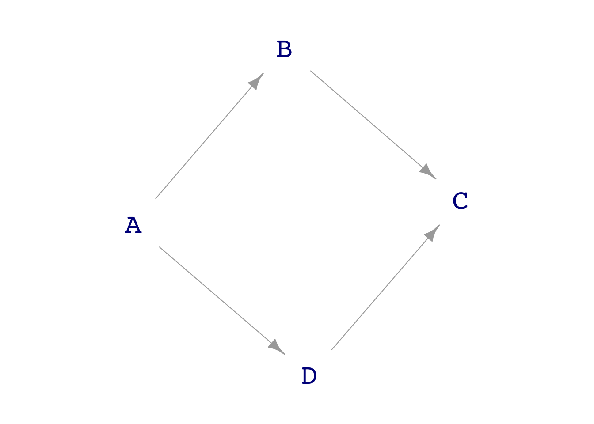
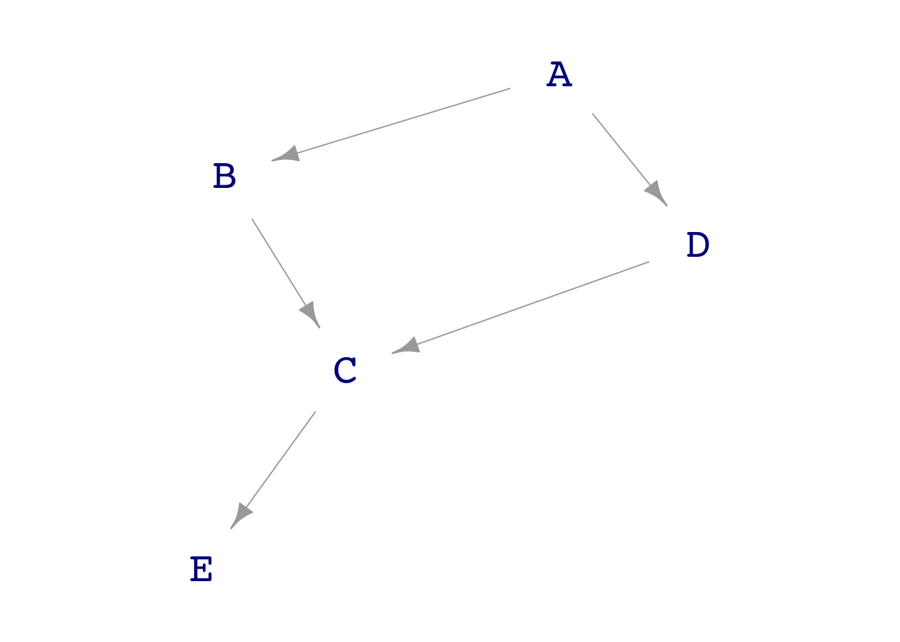
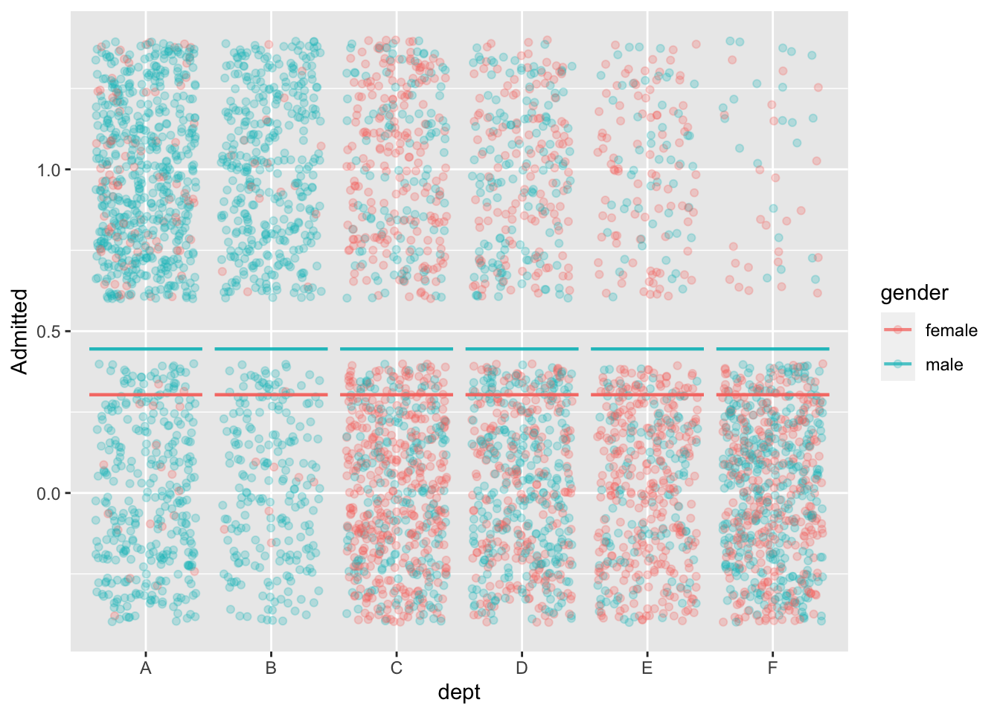
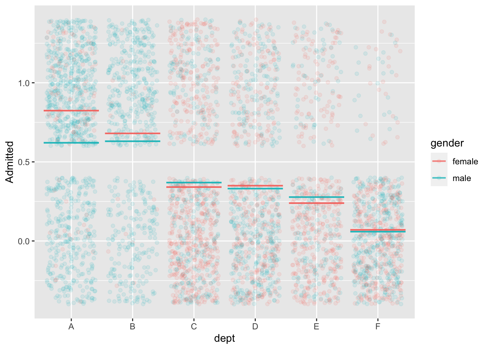
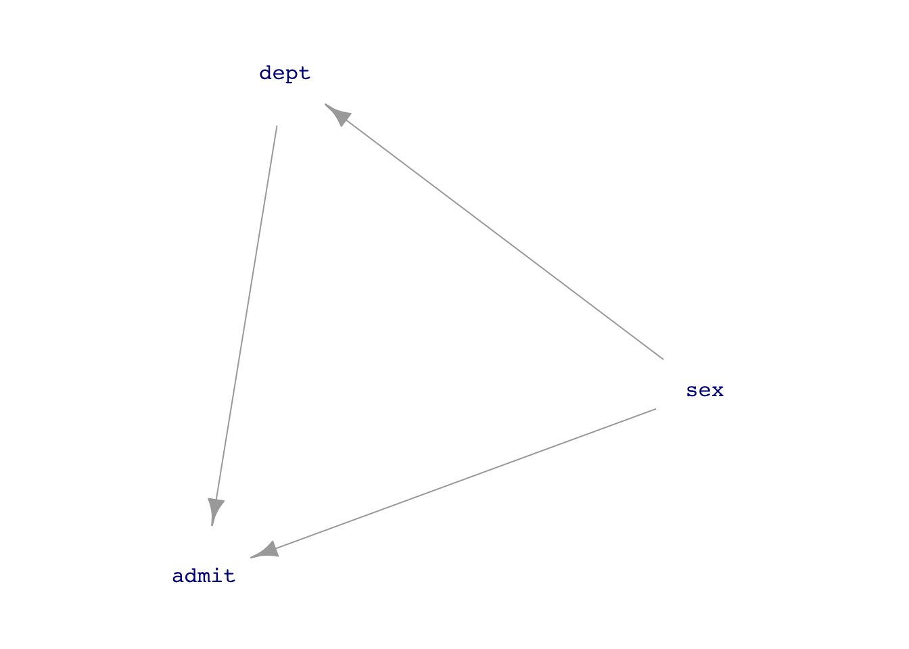

Instructor Teaching Notes for Lesson 30
Math300Z
Aside: Confidence bands and global warming.
Cherry blossoms from Kyoto over 1200 years.
Smoking and cancer: a 1950s controversy
Deniers of a smoking/cancer link claimed there was a common cause for both: a “cancer gene.”
The gene had not been identified, so no data could be collected on it.
This is an example of confounding: the effects of the (supposed) gene and of smoking are mixed together.
Discovering the rules for small DAGs
Class activity
More complex DAGs
In considering the relationship between two nodes, enumerate each of the paths that connect the two nodes.
Example: Smoking with a non-genetic mediator: Tar
There are two paths from Tar to Lung cancer:
Two types of path between two endpoint nodes:
- A correlating path: Starting from some node on the path, causal influence can flow (along the arrows) to both endpoints.
BLOCK a correlating path by using some node along it as a covariate. Otherwise, it’s open.
- A colliding path: There’s no node on the path from which causal influence can flow (along the arrows) to both endpoints.
OPEN a colliding path by using the collider as a covariate. Otherwise, it’s closed.
one <- dag_make(
A ~ exo(),
B ~ A + exo(),
D ~ A + exo(),
C ~ B + D +exo()
)
dag_draw(one)
Samp <- sample(one, size=1000)lm(D ~ A, data=Samp) |> conf_interval()# A tibble: 2 × 4
term .lwr .coef .upr
<chr> <dbl> <dbl> <dbl>
1 (Intercept) -0.0507 0.0118 0.0744
2 A 0.949 1.01 1.07 lm(D ~ A + B, data=Samp) |> conf_interval()# A tibble: 3 × 4
term .lwr .coef .upr
<chr> <dbl> <dbl> <dbl>
1 (Intercept) -0.0516 0.0110 0.0736
2 A 0.899 0.988 1.08
3 B -0.0383 0.0234 0.0852lm(D ~ A + C, data=Samp) |> conf_interval()# A tibble: 3 × 4
term .lwr .coef .upr
<chr> <dbl> <dbl> <dbl>
1 (Intercept) -0.0432 0.00736 0.0579
2 A 0.259 0.336 0.413
3 C 0.313 0.342 0.371 lm(D ~ A + B + C, data=Samp) |> conf_interval()# A tibble: 4 × 4
term .lwr .coef .upr
<chr> <dbl> <dbl> <dbl>
1 (Intercept) -0.0205 0.0235 0.0675
2 A 0.431 0.501 0.570
3 B -0.544 -0.490 -0.437
4 C 0.479 0.510 0.542 one <- dag_make(
A ~ exo(),
E ~ 10*C + exo(),
B ~ A + exo(),
D ~ A + exo(),
C ~ B + D +exo()
)
dag_draw(one)
Samp <- sample(one, size=1000)
lm(D ~ A, data=Samp) |> conf_interval()# A tibble: 2 × 4
term .lwr .coef .upr
<chr> <dbl> <dbl> <dbl>
1 (Intercept) -0.115 -0.0566 0.00185
2 A 0.915 0.972 1.03 lm(D ~ A + C, data=Samp) |> conf_interval()# A tibble: 3 × 4
term .lwr .coef .upr
<chr> <dbl> <dbl> <dbl>
1 (Intercept) -0.0547 -0.00594 0.0429
2 A 0.290 0.364 0.438
3 C 0.275 0.303 0.331 lm(D ~ A + E, data=Samp) |> conf_interval()# A tibble: 3 × 4
term .lwr .coef .upr
<chr> <dbl> <dbl> <dbl>
1 (Intercept) -0.0535 -0.00474 0.0440
2 A 0.291 0.365 0.438
3 E 0.0275 0.0303 0.0331
Can Tar be used to avoid the confounding due to genetics? How do you block the back-door pathway?
## The Berkeley graduate admissions data from 1973
::: {.cell}
```{.r .cell-code}
mod1 <- model_train(zero_one(admit, one="admitted") ~ gender,
data=UCB_applicants)
model_plot(mod1, x=dept, color=gender, nlevels=10) +
ylab("Admitted")
:::
mod2 <- model_train(zero_one(admit, one="admitted") ~ gender*dept,
data=UCB_applicants)
model_plot(mod2, x=dept, color=gender, nlevels=10, data_alpha=0.1) +
ylab("Admitted")
model_train(zero_one(admit, one="admitted") ~ gender,
data=UCB_applicants) |> conf_interval()Waiting for profiling to be done...# A tibble: 2 × 4
term .lwr .coef .upr
<chr> <dbl> <dbl> <dbl>
1 (Intercept) -0.931 -0.830 -0.732
2 gendermale 0.485 0.610 0.736model_train(zero_one(admit, one="admitted") ~ gender + dept,
data=UCB_applicants) |> conf_interval()Waiting for profiling to be done...# A tibble: 7 × 4
term .lwr .coef .upr
<chr> <dbl> <dbl> <dbl>
1 (Intercept) 0.488 0.682 0.877
2 gendermale -0.259 -0.0999 0.0582
3 deptB -0.258 -0.0434 0.172
4 deptC -1.47 -1.26 -1.05
5 deptD -1.50 -1.29 -1.09
6 deptE -1.99 -1.74 -1.49
7 deptF -3.65 -3.31 -2.98 Back to Berkeley
Should we adjust for department? Let’s go to a DAG.
UCB_dag1 <- dag_make(sex ~ exo(),
dept ~ sex,
admit ~ sex + dept)
dag_draw(UCB_dag1, vertex.label.cex=1)
If we think that the connection sex \(\longrightarrow\) department is just a matter of personal choice (as in the 1975 Science article), then we should block the back-door pathway.
But if we think that sex \(\longrightarrow\) department reflects systemic issues such as which departments are considered important and get funding, or which careers women think they can succeed in, then we do not want to block the backdoor pathway.
UCB_dag2 <- dag_make(sex ~ exo(),
success ~ sex,
dept_funding ~ sex,
dept ~ success,
admit ~ sex + dept + dept_funding)
dag_draw(UCB_dag2, vertex.label.cex=1)
Birthweight collider
Observations from the 1960s:
- Smoking is associated with lower birthweight
- Lower birthweight is associated with increased mortality
Question: Does smoking have a direct effect on mortality?
How do you look at the direct effect of smoking on mortality? Block the other pathway by using birth weight as a covariate.
When this was done, by looking only at low-birthweight babies, it was found that smoking reduces mortality.
Might there be something else going on? Is there another cause for low birthweight?